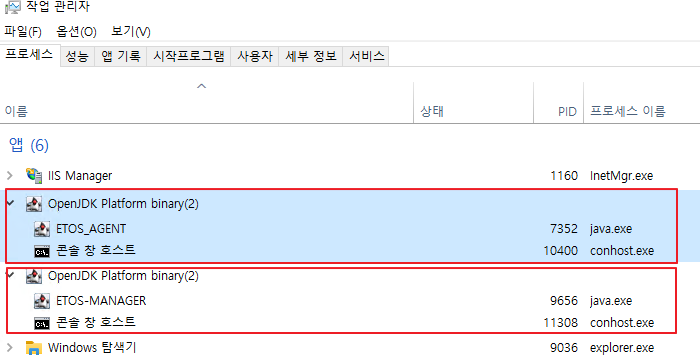

패치 시 유의사항
1. ETOS_AGENT 운영시 주의점
1.1 ETOS_AGENT 종료 요령
ETOS_AGENT 종료시 아래 그림과 같이 agent sleep start 로그가 찍혔을 때
종료 하도록 합니다. agent sleep 대기 시간은 5초로 되어 있습니다.

1.2 ETOS 화면에서 BOX activate 요령
아래 절차를 반드시 지켜야 하는 이유
ETOS BOX 상태 수집은 modbus로 수집한다. agent는 fab내 모든 BOX에 대해 상태 수집을 하기에,
기동시 순간적으로 모든 BOX에 대해 connection을 맺게 되는데, 이러한 행위가 BOX에 장애를 일으키는 요인으로 추측된다.
하여 패치된 AGENT는 각 BOX connection을 한대씩 순차적으로 1초의 대기시간 후 접속한다.
AGENT는 BOX 기준정보상 ACTIVE 상태인 것만 수집 하는데, 잘못설정된 IP로 ACTIVE 등록 할 경우,
BOX 전체에 대해 장애를 일으키는 요인이 될 수 있다.
결국, 정상 ip 할당 된 box에 대해 ACTIVE 설정 하여, 운영해야 한다.
그리고, 여러 BOX를 신규 등록하여 운영 한다면, 1대씩 시간 간격을 두고 ACTIVE 하도록 한다.
기준정보 관리 요령
1. 현장에 ETOS BOX가 운영되고 있는지 확인 합니다.
(ETOS-RD프로그램으로 BOX software 21.07.14 version 확인, ping test)
2. ETOS 관리 화면에서 ETOS BOX 등록 시, ACTIVE 상태 여부를 1번 수행 결과에 따라 결정 합니다.
(ETOX BOX 등록 화면에서, 현재 ACTIVE 체크 항목은 default로 체크 되어 있지 않습니다.)
2. Java Process start/stop시 java process 갯수 확인
- ETOS-MANAGER 프로세스는 1개만 운영되어야 합니다. "windows 작업관리자"에서 반드시 확인하세요.
- ETOS_AGENT 프로세스는 1개만 운영되어야 합니다. "windows 작업관리자"에서 반드시 확인하세요.

# web 화면 변경이 안될경우
- ctrl+shift+r 버튼(chrome 캐시초기화)을 눌러 변경된 화면을 확인 할 수 있습니다.